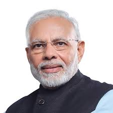

This website is to showcase all my talents,favourites and inspirations....
.jpg)
Animating
Animating is very intereseting. We have lot of softwares where we can animate anything. There are animated movies, Videos and more. I use Adobe After Effects, Blender and Animaker. These are the most popular softwares. Many youtubers use these tools to make engaging videos and attract people.
Harry Potter and the Philosopher's stone
My Work
My Inspiration

Narendra Modi
He is one of my inspiration. He was was running a tea stall but now he is the Prime Minister of India. Tis refers to his hardwork. He did not think that one day he will become the Prime Mininster Of India. He solved many issues in India. That's why he is my inspiration.

JK Rowling
She is one of my inspiration. She was a normal women, She wrote a book Harry Potter and the Philosophers stone which was ignored by 17 Publishers but now so many people including me is a big fan of Harry Potter book and movie series. Now she became a billionare...